1. このダッシュボードでできること
会社の「お金（売上・原価・利益）」と「現場（工程・日報・資材）」と「人（タスク・担当者）」を、1つの画面群で見て、そのまま手を動かして管理するための道具です。
| 知りたいこと・やりたいこと | 使うページ |
|---|---|
| いま何を優先してやるべきか | ホーム（「今日やること」） |
| 売上・原価・利益が、計画や前年と比べてどうか | 売上分析／損益分析／目標・予実 |
| 案件（お客様の工事の話）の一覧、商談の記録、失注の理由 | 案件管理 |
| 全現場の進み具合、遅れ、日報、資材の発注期限 | 現場進捗状況 |
| 職人さんに日程を依頼し、返事をもらう | 現場進捗状況（依頼）／職人の確認ページ（職人側） |
| 見積書を作って、案件に登録する | 見積もり作成 |
| 人に仕事を頼む、自分のやることを管理する | タスク／右下の「タスク」タブ |
| 現場の小さな気づきを残して、忘れないようにする | メモ |
| 担当者ごとの実績を、経営の目で見る | 担当者別／活動分析 |
| 週間・月次・四半期・年間のまとめと、打つ手のヒント | レポート |
2. 見本としての注意（先にお読みください）
- 数字・名前（サンプル邸A、担当A、職人Aなど）は、すべて作り話の合成データです。本物のお客様や社員の情報は入っていません。画面の上にも「合成サンプル（実データではありません）」と出ています。
- 入力した内容（タスク・メモ・日報・商談・発注のチェックなど）は、いま見ているパソコン（ブラウザ）の中にだけ保存されます。他の人の画面には届きませんし、別のパソコンには引き継がれません。
- 日報の写真も、このブラウザの中にだけ（小さく縮めて）保存されます。
- 「他の人に依頼して、相手の画面に届く」動きは、見本では1つの画面の中で「見る人」を切り替えて再現しています。実際に複数人で使うには、共通の保存先（サーバー）をつなぐ必要があります。
- AI（文章を考えるAI）と、録音サービス Plaud（プラウド）はまだつないでいません。AIのように見える提案は、決まった規則で作った文章です（詳しくは「9. 今できること／まだできないこと」）。
3. 画面の共通の見かた
3-1. 画面の構成（地図）
ページを切り替える。赤い丸の数字は「対応が必要な件数」
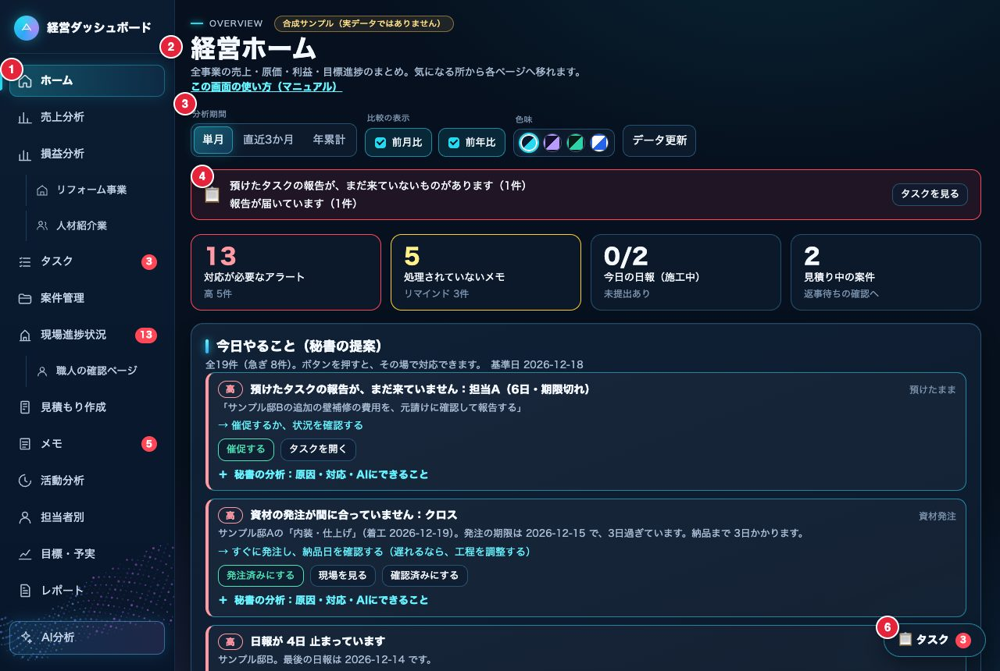
右下には、どのページでも「タスク」ボタンが浮かんでいます（⑥）。押すと、タスクの小さな画面が開きます（詳しくは「タスク」の項）。
3-2. 左メニュー（①）
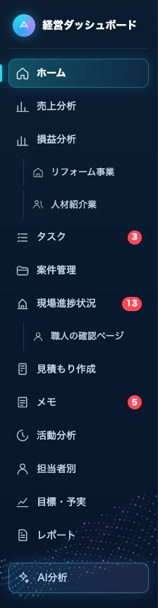
| 順番 | メニュー | ひとことで |
|---|---|---|
| 1 | ホーム | 今日やることと、全体の数字 |
| 2 | 売上分析 | 売上の推移・構成・現場ごとの収支 |
| 3 | 損益分析 | 売上・原価・利益（その下に「リフォーム事業」「人材紹介業」） |
| 4 | タスク | 人に頼む／自分のやること |
| 5 | 案件管理 | 案件の一覧・商談記録 |
| 6 | 現場進捗状況 | 全現場の進み具合・工程表（その下に「職人の確認ページ」） |
| 7 | 見積もり作成 | 見積書づくり |
| 8 | メモ | 現場の小さな記録 |
| 9 | 活動分析 | 営業・採用の流れと、担当者別の実績 |
| 10 | 担当者別 | 担当者ごとの売上・コスト・利益 |
| 11 | 目標・予実 | 目標額の設定と、計画との比較 |
| 12 | レポート | 週間・月次・四半期・年間のまとめ |
| 13 | AI分析 | 数字から見つけたポイントの一覧 |
- 赤い丸の数字：「タスク」は対応が必要なお知らせの数、「現場進捗状況」は対応が必要なアラートの数、「メモ」は処理されていないメモの数です。0になると消えます。
- いま開いているページは、メニューが明るく光って表示されます。
- 画面が狭いとき（スマホなど）は、メニューがアイコンだけ、または画面の下の横に並ぶバーに変わります。アイコンに触れる（マウスを乗せる）と名前が出ます。横にスクロールすると続きが見えます。
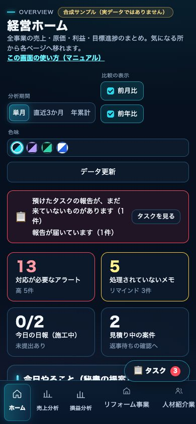
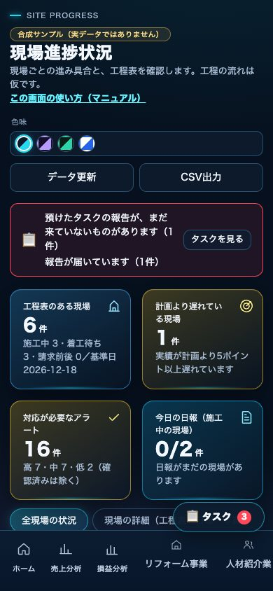
3-3. 操作パネル（③）で切り替えられるもの
ページによって、出るものが違います（下の表で「どのページで出るか」を示します）。
| 名前 | 出るページ | 効果 |
|---|---|---|
| 分析期間（単月／直近3か月／年累計） | ホーム・売上分析・損益分析（3画面）・活動分析 | 上のカード、円グラフ、比較、原価の内訳、担当者の実績が、すべて同じ期間の数字にそろいます。いまの期間の名前は、カードの下に「分析期間：12月（単月）」のように必ず出ます。 |
| 期間（今期／直近6か月／直近3か月） | 売上分析・損益分析 | グラフに表示する月の範囲を変えます。 |
| 比較の表示（前月比／前年比） | ホーム・売上分析・損益分析・目標・予実 | 押すたびに入り切り。前月や前年との差（％）が、カード・グラフ・表に出たり消えたりします。 |
| 表示（月次＋累計／月次のみ／累計のみ） | 損益分析 | グラフに「月ごとの棒」と「累計の線」のどちらを出すかを選びます。 |
| 色味（丸いボタン4つ） | 全ページ | 画面の色の雰囲気を、ネイビー／バイオレット／フォレスト／ライト（明るい）から選べます。目が疲れる、印刷したい、などのときに。 |
| データ更新 | ほとんどのページ | 見本のデータを読み直して、画面を作り直します。入力した内容は消えません。 |
| CSV出力 | 数字の表があるページ | いま見ているページの表を、Excelで開けるCSVファイルとして保存します（ダウンロードされます）。 |
3-4. 数字の読み方の基本
- 単位：損益・売上・活動分析の金額は万円。案件管理・見積・現場の収支の一部は円（円と万円が混ざらないよう、各画面に単位を書いています）。
- 前年比：前の年の同じ時期（同じ期間）と比べた増減（％）。「前年の同じ期間比」と書いてあるものは、いま選んでいる分析期間と同じ長さの、前年の期間との比較です。
- 計画：年間の目標を月ごとに割り振った、「この月はここまで行きたい」という線です。
- 利益 ＝ 売上 − 原価（資材費 ＋ 人件費）。利益率 ＝ 利益 ÷ 売上。
- 数字の横の ↑ は増加、↓ は減少です。原価は「減ると良い」ので、色の良し悪しは項目ごとに合わせてあります。
3-5. 右下の「タスク」ボタン
どのページからでも、右下の「📋 タスク」ボタン（数字付き）を押すと、タスクの小さな画面が開きます。ページを移動しなくても、タスクの確認と追加ができます。詳しい使い方はタスクの項をご覧ください。
各ページの上（名前の下）に、そのページの説明が1行あります。迷ったらまずそこをお読みください。
4. 1日・1か月の使い方
毎朝（5分）
- ホームを開き、「今日やること」を上から順に見ます。赤（高）の項目からボタンで対応します（催促する、発注済みにする、など）。
- 左メニューの赤い丸の数字（タスク・現場進捗状況・メモ）を見て、0になるまで片づけます。
- 現場進捗状況で、ガントチャートの赤・黄のマークが付いた現場をチェックします。
日中（現場・営業）
- 現場の気づきは、その場でメモに残します（写真も付けられます）。
- 職人さんは職人の確認ページで依頼を確認し、日報と写真を上げます。
- 商談が終わったら案件管理の「商談記録」に残し、案件になれば「案件にする」、ならなければ理由を残します。
- 見積が必要なら見積もり作成で作り、案件に登録します。
- 人に頼みたいことは「タスク」の「＋」から頼みます。
夕方
- 日報が上がっていない現場がないか、ホームの「今日の日報（施工中）」で確認します。
- 預けたタスクの報告が来ていれば、確認して完了にするか差し戻します。
月末・月初
- レポートの「月次」を開き、まとめと「アドバイザーの意見」を読みます。
- 損益分析で、分析期間を「単月」と「年累計」に切り替えて、計画との差を見ます。
- 目標を見直す場合は目標・予実で目標額を変えます。
- 担当者との面談の前に担当者別と活動分析を見ます（数字は評価の「材料」で、点数ではありません）。
ホーム 画面を開く →
場所：左メニューの1番上「ホーム」。目的：まず開いて「今日やること」と会社全体の数字を確認する入口です。
画面の上から順に
① 今日のチェック（4つの小さな箱）
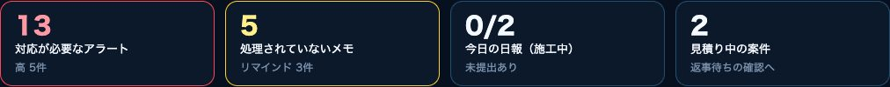
| 箱 | 意味 | 押すと |
|---|---|---|
| 対応が必要なアラート | 現場のアラートの件数（メモ以外）。赤く光っているときは「高」の急ぎがあります | 現場進捗状況へ |
| 処理されていないメモ | まだ処理済みにしていないメモの数 | メモへ |
| 今日の日報（施工中） | 「提出済み／施工中の現場数」。例：2/3 は3現場中2現場が提出済み | 現場進捗状況へ |
| 見積り中の案件 | お客様の返事待ちの案件の数 | 案件管理へ |
② 今日やること（秘書の提案）
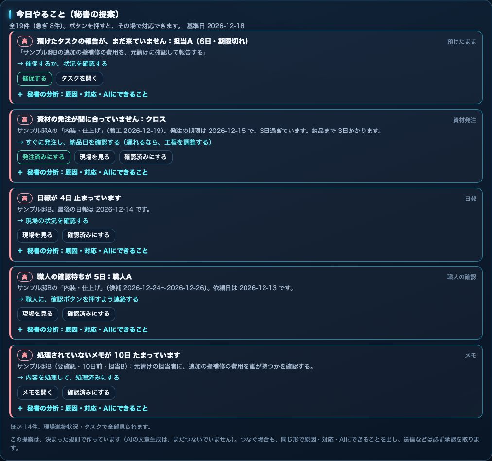
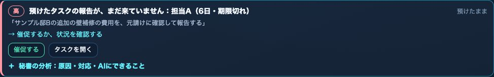
タスクのリマインドと現場のアラートを、急ぎの順（高→中→低）に並べます。最大5件を表示し、残りは「ほか○件」と出ます。
| 見えるもの | 意味 |
|---|---|
| 高 中 低 | 急ぎ度。左の線の色も同じです（赤＝高、黄＝中、青＝低） |
| 題名と、右の小さな文字（例「預けたまま」「資材発注」） | 何の件か／どの種類か |
| → で始まる行 | まずやるべきこと |
| ボタン | その場でできる操作（次の表） |
| 「秘書の分析」（押すと開く） | 考えられる原因、対応の進め方（番号順）、AIが代わりにできること、人がすること |
| ボタン | 出る場面 | 押すとどうなるか |
|---|---|---|
| 催促する | 預けたタスクの報告が来ない | 相手のタスクに「催促あり」が付き、相手の画面にリマインドが出ます |
| 確認して完了にする | 預けたタスクの報告が届いた | そのタスクが完了になります |
| 受け取りました | 新しいタスクが自分に来た | 依頼した人に「受け取られた」ことが伝わります |
| 発注済みにする | 資材の発注の期限が近い／過ぎた | その資材が発注済みになり、アラートが消えます |
| 現場を見る | 現場のアラート | その現場の詳細ページへ |
| 確認済みにする | 現場のアラート | その日の間、この通知を隠します（翌日、まだ解決していなければ再び出ます） |
| タスクを開く／メモを開く | タスク・メモの件 | 該当ページへ |
③ 数字のカード4枚（分析期間にそろう）
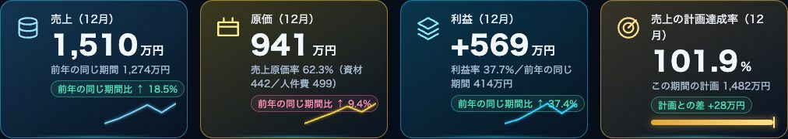
| カード | 見方 |
|---|---|
| 売上（12月） | 選んだ期間の売上。下に「前年の同じ期間」の金額と、前年比のタグ。右の小さな折れ線は直近の推移 |
| 原価（12月） | 資材費＋人件費。売上に対する割合（売上原価率）と内訳が書いてあります。原価は低いほど良いので、色は逆に判断されます |
| 利益（12月） | 売上−原価。利益率と前年の同じ期間の金額 |
| 売上の計画達成率（12月） | この期間の計画に対して、実績が何％か。金色の棒が達成度です。100%以上で計画どおり。「計画との差」は金額での差 |
カードの下の1行（分析期間：○○ 比較：前年の同じ期間／単位：万円）が、いまの数字の「期間」です。上の「分析期間」ボタンで変えられます。
④ 事業カード（リフォーム事業／人材紹介業）
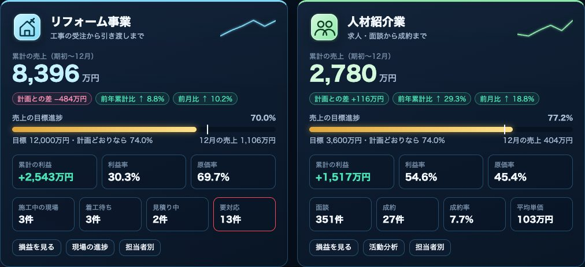
- ロゴ・事業名・説明。色はリフォーム＝薄い水色、人材紹介＝薄い緑で、全ページ共通です。
- 累計の売上と、前年累計比・計画との差、売上の目標進捗（金色の印は「計画どおりならいまここ」）、累計の利益・利益率・原価率。
- リフォームは「施工中の現場／着工待ち／見積り中／要確認」、人材紹介は「面談／成約／成約率／平均単価」の4項目。
- 下のボタン（損益を見る・現場の進捗・担当者別・活動分析）で、くわしいページへ移れます。
⑤ 現場でいま対応が必要なこと（アラート）／いま気をつけたいこと／ページへ移る
アラートは上位4件を表示。「いま気をつけたいこと」は、数字から決まった規則で作った気づき（注意／良い点／参考）です。いちばん下の「ページへ移る」は、各ページへの近道です。
売上分析 画面を開く →
目的：売上の推移を、前月・前年・計画と比べ、どの事業・どの現場から売上が来ているかを見ます。
画面の上から順に
- 数字のカード4枚：ホームと同じ（分析期間にそろう）。
- 月次売上と累計売上の推移（グラフ）：グラフの読み方をご覧ください。
- 損益構成（事業別）：円グラフ。円グラフの読み方をご覧ください。
- 事業ごとの伸び：リフォームと人材紹介それぞれの、選んだ期間の売上、計画達成率（棒）、前年の同じ期間比。
- 現場ごとの収支（リフォーム事業）：下の「現場ごとの収支」をご覧ください。
- 月ごとの売上（万円）の表：月ごとの、リフォーム・人材紹介・合計・前月比・前年同月・前年比・計画・計画との差。いちばん下が累計。
グラフ（月次売上と累計売上の推移）の読み方
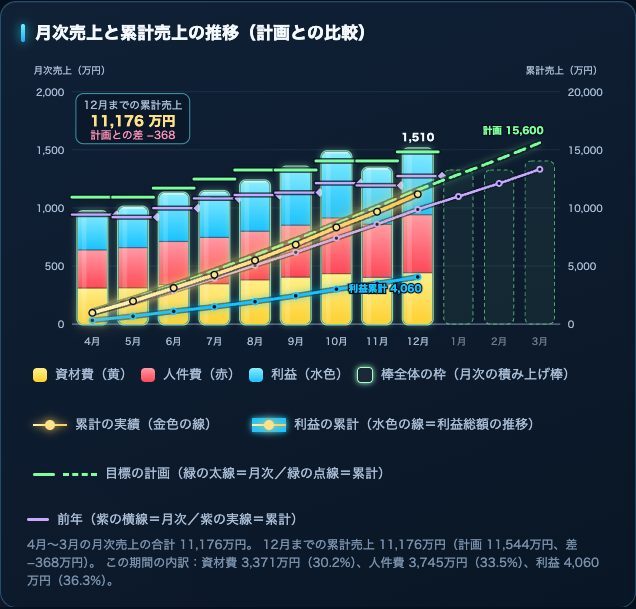
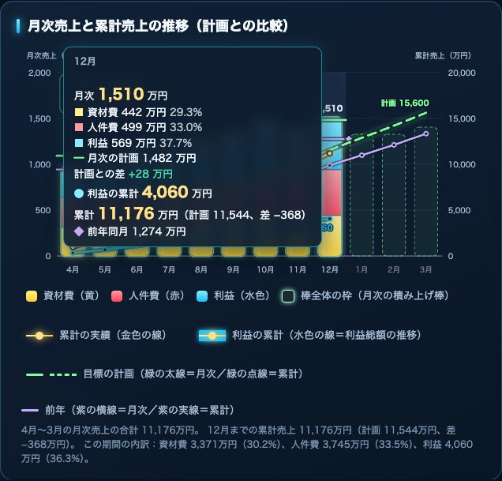
- 棒（月ごとの金額）：1本が1か月。下から資材費（黄）、人件費（赤）、利益（水色）を積み上げ、棒全体の高さ＝売上です。棒全体は薄い黄緑の光る枠で囲まれています。棒の中の数字は、その区分の金額（万円）です。
- 金色の線（累計の実績）：その月までの売上の合計。右側の目盛りで読みます。いちばん右の丸の上に、「○月までの累計売上○○万円・計画との差」の吹き出しが出ます。
- 水色の細い線（利益の累計）：利益総額の推移。右の目盛りで読みます。
- 緑の太い横線（月次の計画）と緑の点線（累計の計画）：目標。実績が線の上なら計画より良い、下なら遅れです。
- 紫の線・菱形（前年）：「前年比」をオンにすると出ます。
操作
- 棒の上にマウスを乗せる（スマホは触れる）：その月の吹き出しが出ます。月次の金額・資材費／人件費／利益の内訳（金額と割合）・計画との差・累計・利益の累計・前年同月が見られます。キーボードの Tab キーで月を移動しても同じものが出ます。
- グラフの下の凡例（資材費…／累計の実績…／利益の累計…／目標の計画…）を押すと、その線の表示・非表示を切り替えられます。
- グラフ右上の「売上／原価／利益」（損益分析のみ）で、グラフの数字そのものを切り替えます。原価を選ぶと、棒は資材費と人件費の2色になります。
円グラフ（損益構成）の読み方
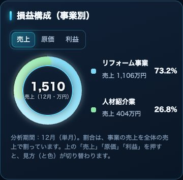
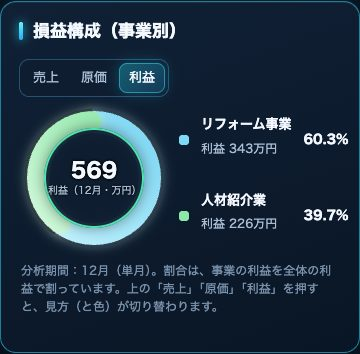
- 中央の暗い円の中に、合計の数字と「売上（12月・万円）」のような説明が出ます。円グラフの色が重なっても文字が読めるよう、円の縁と文字に暗い縁取りを付けています。
- 事業別：リフォーム（薄い水色）と人材紹介（薄い緑）の割合。右の一覧に金額と％。
- グラフの上の「売上／原価／利益」ボタンで、何の割合を見るかを切り替えます。切り替えると、円の中央の縁の色が変わります（売上＝水色、原価＝黄、利益＝緑）。事業の色そのもの（水色・緑）は変わりません。色と事業の対応を覚えやすくするためです。
- 事業ごとの損益分析（リフォーム／人材紹介）の円グラフは、売上に対する資材費（黄）・人件費（赤）・利益（水色）の割合です。右の「資材費」「人件費」「利益」を押すと、その部分だけが色付きで強調され、他は灰色になります。もう一度押すと元に戻ります。
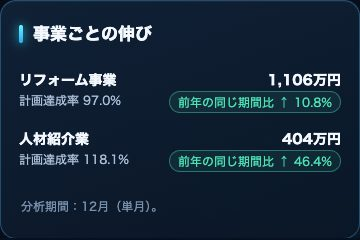
現場ごとの収支（リフォーム事業）
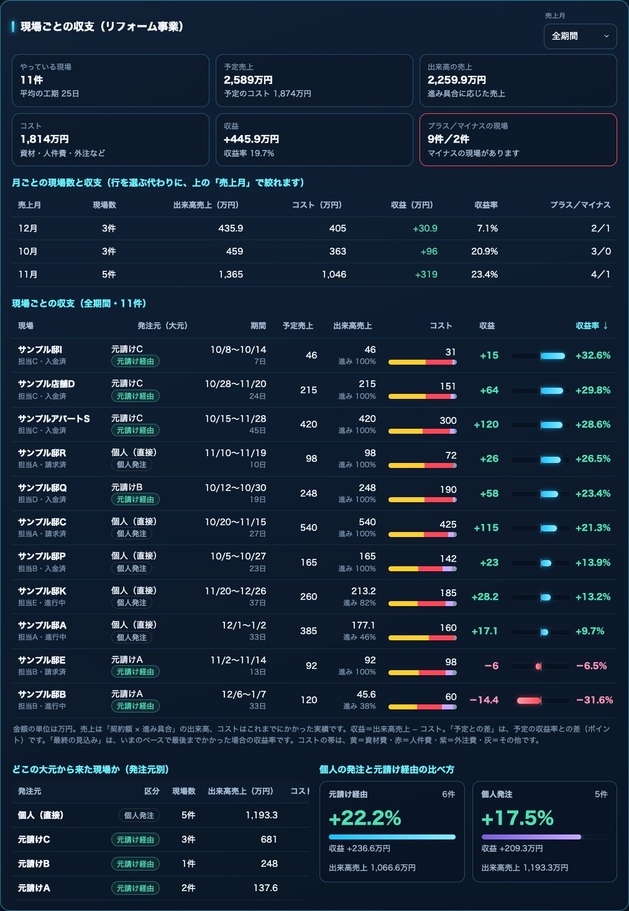
1つの現場がいくら売上になり、いくらかかり、いくら儲かっているかを見る表です。売上は「契約額 × 進み具合」の出来高、コストは、これまでにかかった実績です。
| 列 | 意味 |
|---|---|
| 予定売上 | 契約した金額 |
| 出来高売上 | 契約額 × 進み具合（％）。いま実際に売上になった分 |
| コスト | これまでにかかった資材費・人件費・外注費・その他。色の帯：黄＝資材費、赤＝人件費、紫＝外注費、灰＝その他（帯に乗せると内訳が出ます） |
| 収益 | 出来高売上 − コスト。プラスは儲かっている、マイナスは赤字 |
| 収益率 | 収益 ÷ 出来高売上 |
| 予定との差 | 最初に見込んだ収益率との差（ポイント） |
| 最終の見込み | いまのペースで最後までかかった場合の収益率 |
- 見出しをクリックすると並べ替え（もう一度で逆順）。「売上月」の選択で月を絞れます。
- その下に、発注元（大元）別の集計と、個人の発注と元請け経由の比べ方の表があり、どちらが儲かるかを比べられます。
損益分析 画面を開く →
場所：左メニューの「損益分析」。その下の「リフォーム事業」「人材紹介業」を押すと、事業ごとに絞れます（ページ上の3つのタブでも切り替えできます）。目的：売上・原価（資材費と人件費）・利益を、計画や目標と比べます。
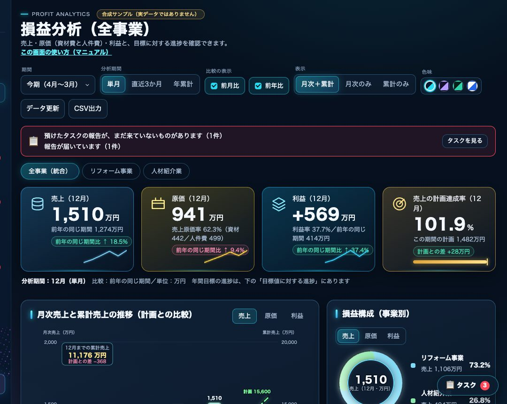
画面の上から順に
- 数字のカード4枚（分析期間にそろう）と、「分析期間：○○」の1行。
- 月次売上と累計売上の推移（計画との比較）：グラフ。右上の「売上／原価／利益」で数字を切り替え。操作パネルの「表示」で、棒だけ・線だけにもできます。
- 損益構成：円グラフ（上の売上分析の説明をご覧ください）。
- 主要指標の比較：売上・資材費・人件費・利益の4つを、売上を100%とした横棒で比べます。右に金額と％、下に前年の同じ期間の金額と前年比。いちばん下は売上の計画達成率（金色）と計画との差。
- 原価の内訳（資材費・人件費）：原価の合計、売上原価率、計画の原価率、前年の原価率。資材費・人件費それぞれに、「原価に占める割合」と「売上に対する割合」。
- 目標値に対する進捗：年間の目標に対する累計の進み。金色の印＝「計画どおりなら、いまここ」。「このペースの年間見込み」と目標との差も出ます。
- 下にAIインサイト（気づきの抜粋）。
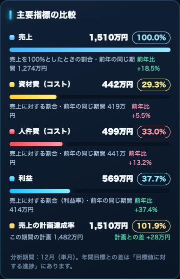
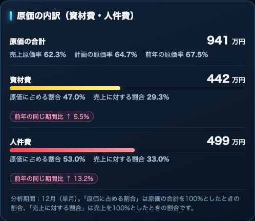
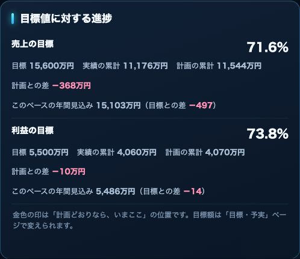
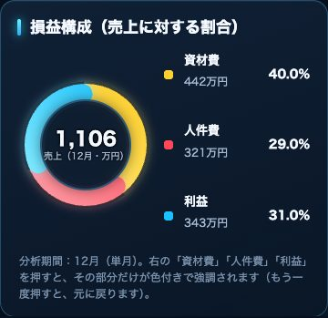
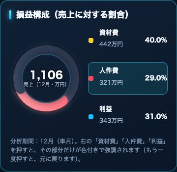
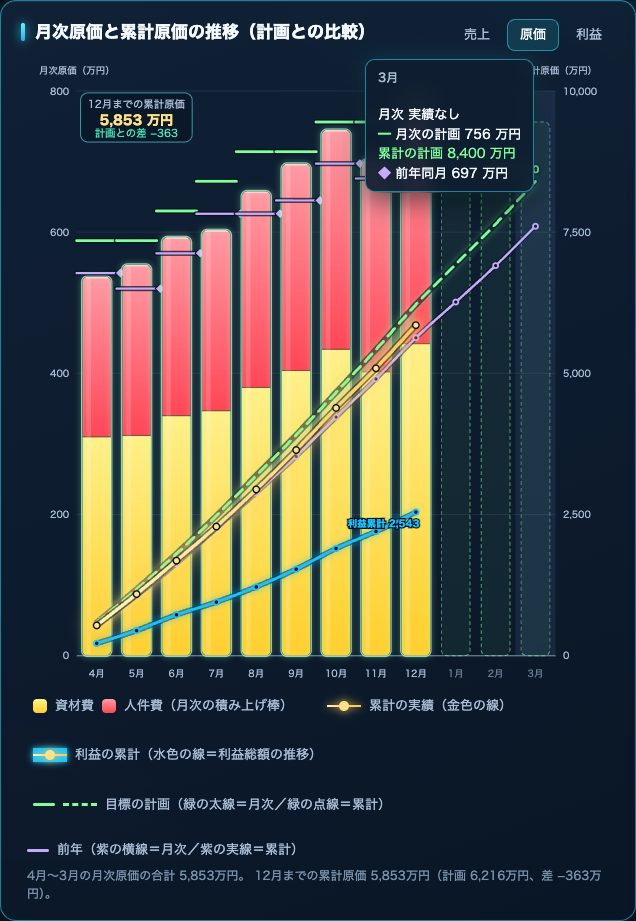
タスク（ページと、右下のタブ） 画面を開く →
目的：「人に頼んだこと」「自分のやること」を、頼む→受ける→進める→報告→確認、の流れで管理します。頼みっぱなし・やりっぱなしを防ぎます。
基本の流れ
- 頼む人が、タスクを作って相手を選びます（ここで小項目も決められます）。
- 相手の画面に「○○からタスクが来ています」と出ます。相手は内容を確認して受け取りましたを押します。
- 相手は進めながら、小項目にチェックを入れます（チェックした割合が進み具合（％）になります）。メモ欄に気づきを書けます。
- 終わったら、一言（任意）を添えて○○に報告するを押します。
- 頼んだ人に「報告が届いています」と出ます。確認して完了にする、または理由を書いて差し戻す。
- 2日たっても報告が来ないと、頼んだ人にリマインドが出ます。催促するを押すと、相手に「催促あり」が付きます。
ページの上から順に
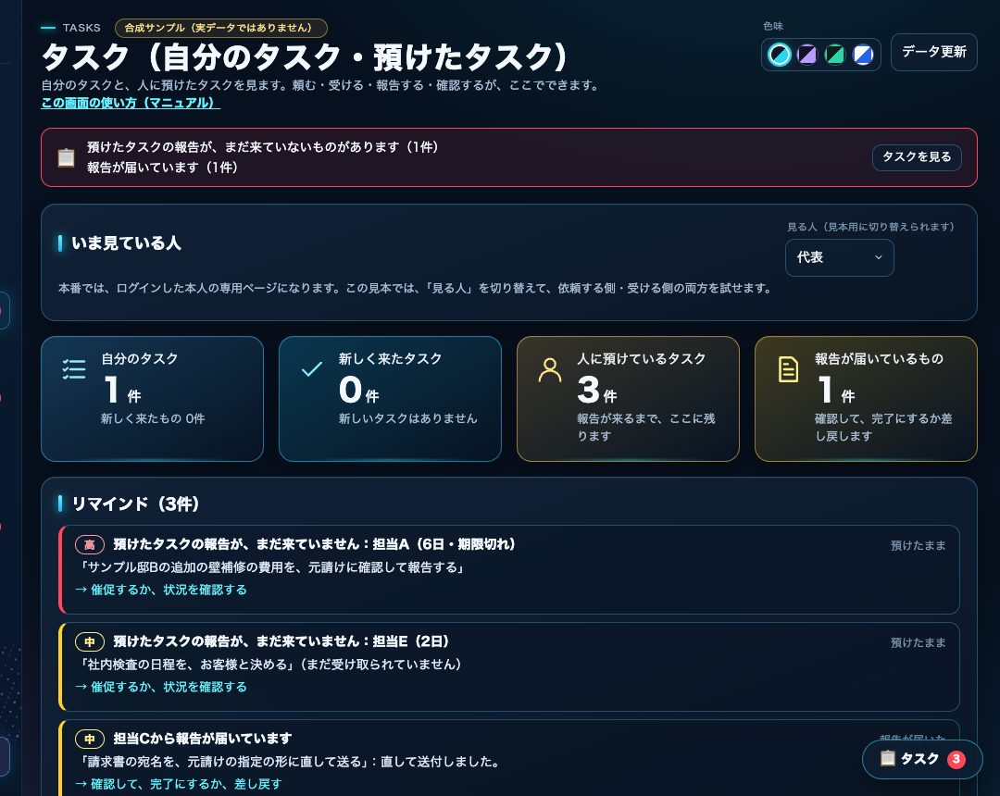
| 場所 | 内容 |
|---|---|
| いま見ている人 | 見本用の切り替え。「代表」「担当A」…を選ぶと、その人の画面になります。依頼する側・受ける側の両方を1つの画面で試せます。本番では、ログインした本人の専用ページになります。 |
| 数字のカード4枚 | 自分のタスク／新しく来たタスク／人に預けているタスク／報告が届いているもの（それぞれの件数） |
| リマインド | いま対応が必要なものの一覧（高中低）。内容：新着／報告が遅れている／催促が来ている／差し戻された／預けたまま／報告が届いた／期限切れ |
| タスクを追加する | ＋ 頼む／自分のタスクを追加を押すと、「人に頼む」か「自分のタスクを追加する」かを選べます（下で説明） |
| 3つのタブ | 自分のタスク／預けているタスク／完了。件数付き |
1件のタスクの見かた
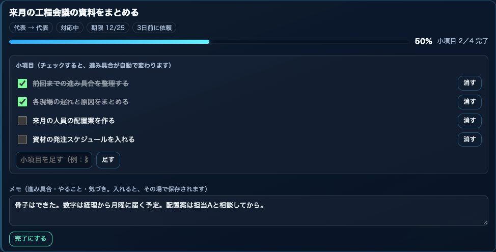
- 大きな文字：タスクの内容。
- 小さなタグ：
代表 → 担当A（誰から誰へ）／状況（未着手・対応中・報告済・完了・差し戻し）／期限／「3日前に依頼」／関係する案件（押すと現場の詳細へ）／新着／「催促あり」。期限が過ぎると赤く表示されます。 - 進み具合の棒と％：小項目があればチェックの割合で自動計算。小項目がなければ、自分のタスクはつまみ（スライダー）で自分で入れます。
- 小項目：チェックを入れる／消す／入力欄に書いて足す。たとえば「来月の工程会議の資料をまとめる」の中に、「進み具合を整理する」「配置案を作る」…と分けて、4つ中2つ終われば50%になります。
- メモ欄：進み具合・やること・気づきを自由に書きます。入力欄から外れると、その場で保存されます。
- ボタン：状況に応じて、受け取りました／報告する／完了にする（自分のタスク）／確認して完了にする／差し戻す／催促する。
タスクを追加する（頼む／自分）
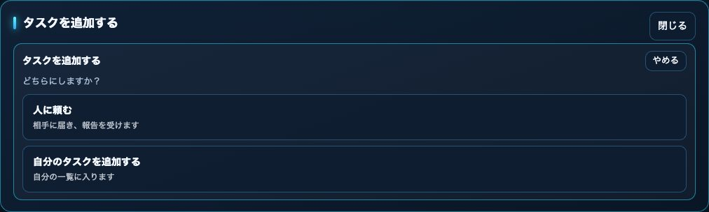
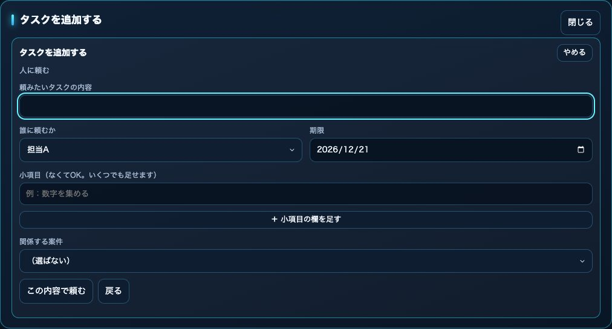
ページの「＋ 頼む／自分のタスクを追加」、または右下タブの「＋」を押します。
| 選ぶもの | 入力する項目 | 結果 |
|---|---|---|
| 人に頼む | 頼みたいタスクの内容／誰に頼むか（自分以外）／期限／小項目（欄を足せます・なくてOK）／関係する案件（選んでも選ばなくてもOK） | 相手のタスクとして届き、「この内容で頼む」で確定。相手のページにお知らせが出ます |
| 自分のタスクを追加する | タスクの内容（必須）／期限／小項目（なくてOK）／関係する案件／メモ（なくてOK） | そのまま自分のタスクになります |
「戻る」で選び直し、「やめる」で閉じます。内容が空のときは、日本語のエラー文が出て、追加されません。
右下の「タスク」タブ（どのページでも使える小さな画面）
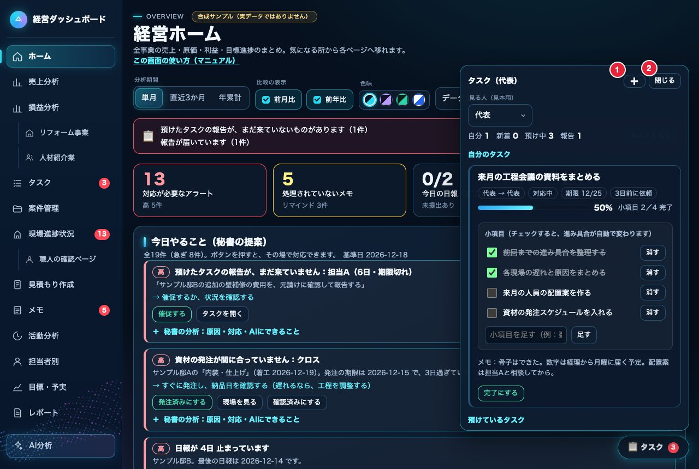
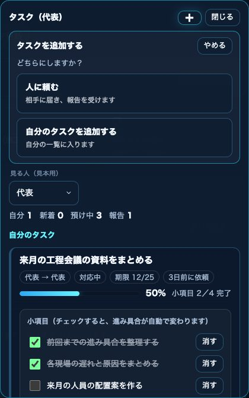
- ボタンの数字＝対応が必要なお知らせの数。押すと画面が開きます。
- 見出し「タスク（見ている人）」の右に、＋ボタンと閉じるボタン。＋を押すと「人に頼む／自分のタスクを追加する」の選択と入力フォームが、画面の上に出ます（現在開いている現場や案件が、「関係する案件」に最初から入ります）。
- 見る人（見本用）の切り替え／「自分 2・新着 0・預け中 4・報告 1」の件数／自分のタスク（最大4件）／預けているタスク（最大4件）。
- いちばん下の「タスクのページを開く」で、このページへ。
案件管理 画面を開く →
案件とは、お客様から受けた1件の工事の話です（見積りの段階から、受注・施工・請求・入金・失注まで）。目的：案件の一覧・金額・状況と、商談の記録をまとめて管理します。ページ上のタブで「案件の一覧」と「商談記録」を切り替えます。
タブ「案件の一覧」
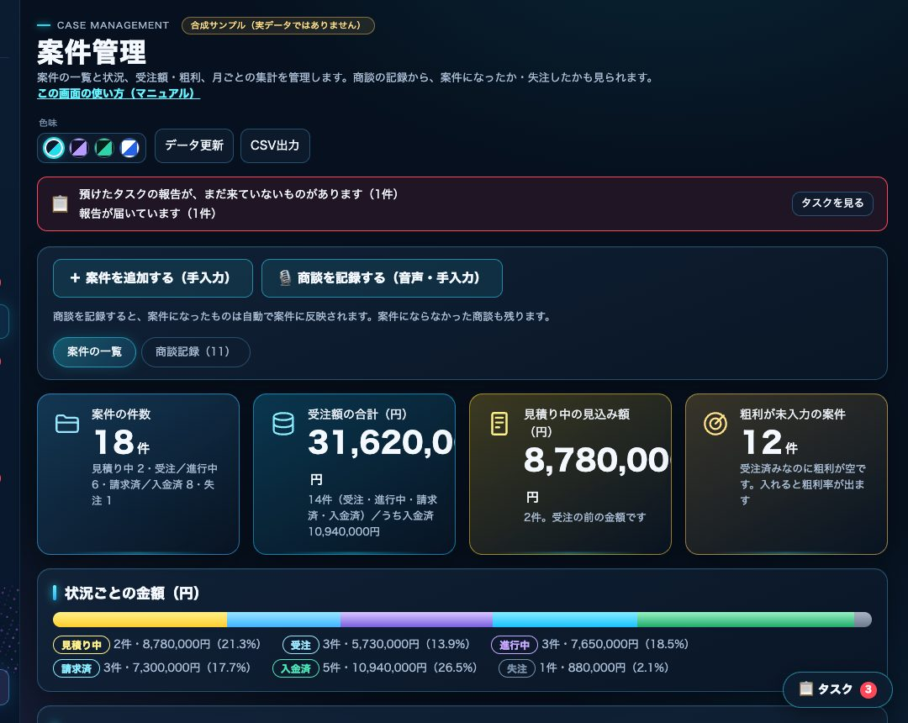
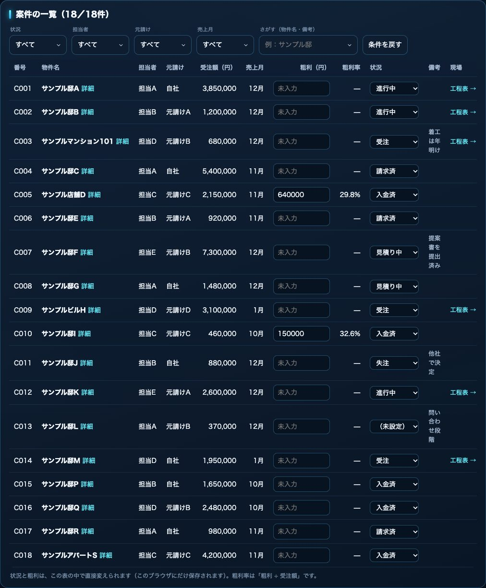
- 入口のボタン2つ：＋ 案件を追加する（手入力）／🎙 商談を記録する（音声・手入力）。
- 数字のカード：案件の件数／受注額の合計（円）／見積り中の見込み額（円）／粗利が未入力の案件（件）。
- 状況ごとの金額（円）：状況別に色分けされた1本の帯。見積り中・受注・進行中・請求済・入金済・失注の金額の割合です。
- 案件の一覧：絞り込み（状況／担当者／元請け／売上月／キーワード「さがす」）と、条件を戻す。表の列：番号・物件名・担当者・元請け・受注額（円）・売上月・粗利（円）・粗利率・状況・備考・詳細。
- 月ごとの集計：売上月ごとの件数・受注額・粗利の合計。入るのは「受注・進行中・請求済・入金済」だけです（見積り中・失注・状況なしは入りません）。
状況の意味
| 状況 | 意味 |
|---|---|
| 見積り中 | 見積書を出して、お客様の返事待ち |
| 受注 | 契約が決まり、まだ着工していない |
| 進行中 | 施工している |
| 請求済 | 工事が終わって請求書を出した |
| 入金済 | お金が入った |
| 失注 | お断りされた |
案件を追加する（手入力）
- 「＋ 案件を追加する（手入力）」を押す。
- 物件名（必須）・担当者・元請け・受注額（円）・売上月・状況・備考を入れる。
- 「この案件を追加」を押す。一覧と集計にすぐ反映されます。物件名が空だと日本語のエラーが出ます。
案件の「詳細」
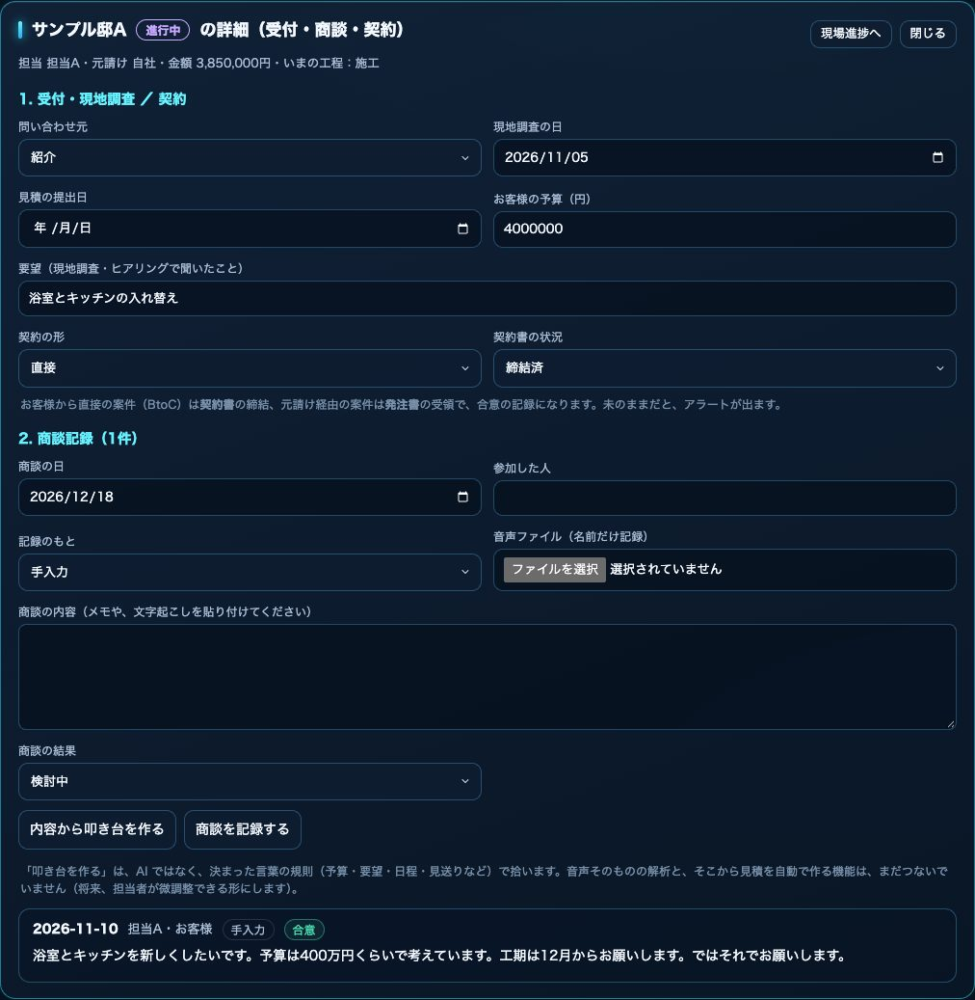
表の詳細を押すと、その案件の受付・商談・契約の詳細が開きます。
- 1. 受付・現地調査／契約：要望（現地調査・ヒアリングで聞いたこと）、契約書／発注書の状況などを入力・確認します。
- 2. 商談記録：この案件の商談。「商談の日・参加した人・記録のもと・商談の内容（メモや文字起こしの貼り付け）・結果」を残せます。
- 叩き台：商談の内容から作る見積の下書き。内容から叩き台を作る→担当者が直してからこの叩き台で見積を作るで、見積もり作成へ進みます。AIではなく、決まった規則で拾った下書きです。必ず人が直してください。
タブ「商談記録」
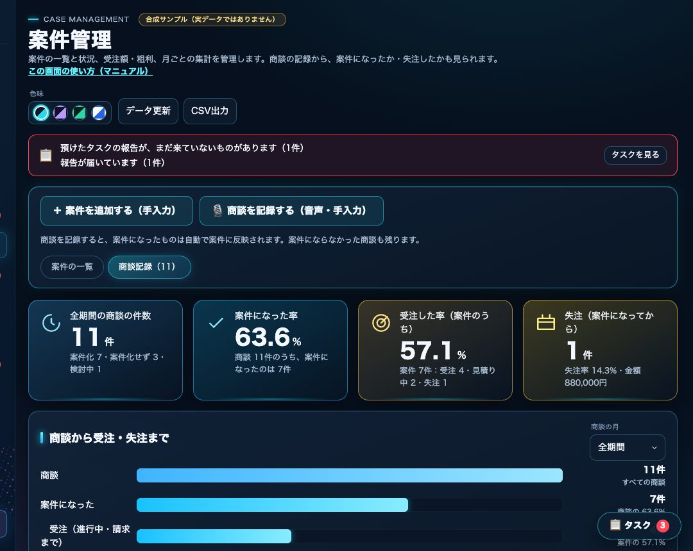
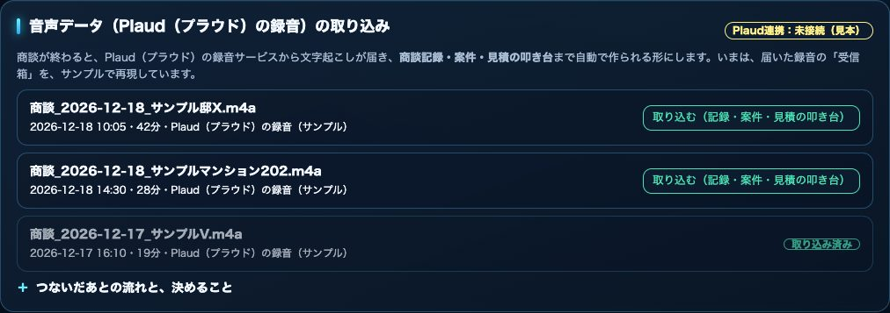
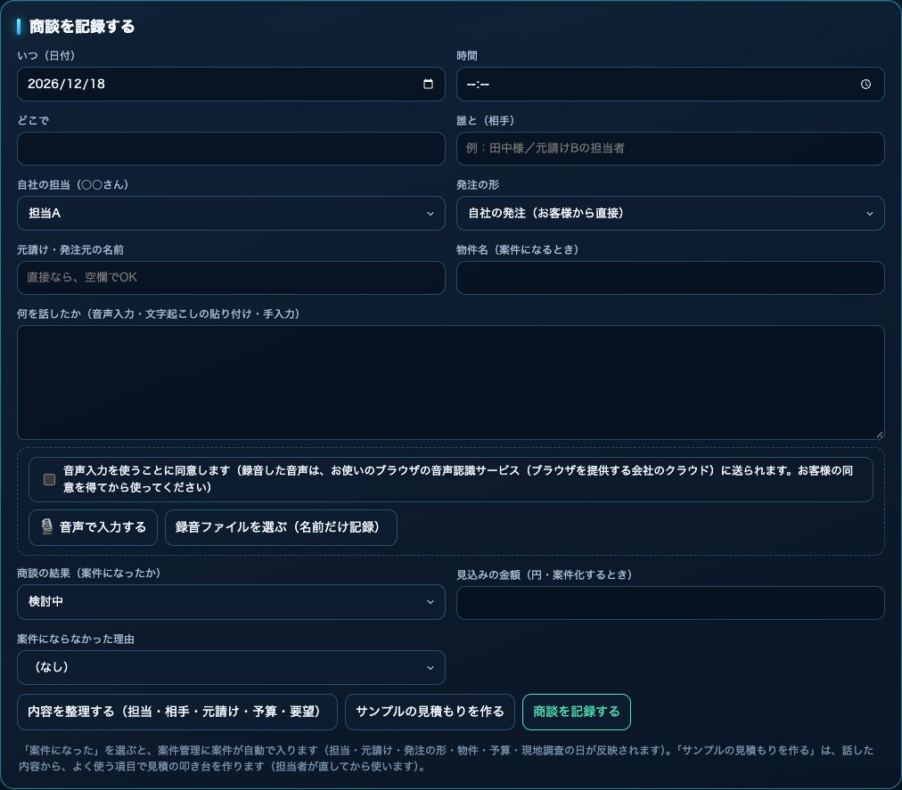
商談（お客様と話したこと）の記録と、そこから受注・失注までの見える化です。
- 商談から受注・失注まで：全期間の商談の件数／案件になった率／受注した率（案件のうち）／失注（案件になってから）。「商談の月」で月を絞れます。
- 月ごとの商談と失注の表／失注・見送りの理由（理由ごとの件数）。
- 音声データ（Plaud（プラウド）の録音）の取り込み：録音サービスから届いた文字起こしの「受信箱」の見本です。取り込む（記録・案件・見積の叩き台）を押すと、担当・相手・発注の形・物件・場所・予算・要望を規則で整理し、商談記録と案件と見積の叩き台まで一気に作ります。実際の Plaud との連携は、まだつないでいません。
- 商談を記録する（入力フォーム）：いつ／時間／どこで／誰と（相手）／自社の担当／発注の形／元請け・発注元の名前／物件名／何を話したか（音声入力・文字起こしの貼り付け・手入力）／商談の結果（案件になったか）／見込みの金額／案件にならなかった理由。
| ボタン | 効果 |
|---|---|
| 🎙 音声で入力する | 話した内容を文字にします。先に「音声入力を使うことに同意します」にチェックが必要です。録音した音声は、お使いのブラウザの会社の音声認識サービス（クラウド）に送られるため、お客様の同意を得てから使ってください。使えないブラウザでは、日本語のお知らせが出ます。 |
| 内容を整理する（担当・相手・元請け・予算・要望） | 書いた内容から、担当・相手・元請け・予算・要望を規則で拾って入力欄に入れます。直してから使います。 |
| サンプルの見積もりを作る | 内容から見積の叩き台を作り、見積もり作成のページへ移ります。 |
| 商談を記録する | 商談を保存します（案件になる場合は案件も作ります）。 |
記録した商談の一覧では、検討中の商談に案件にする（案件管理に入る）／案件にならず（理由を書いて残す。失注・見送りの集計に入る）／サンプルの見積もりのボタンが出ます。
現場進捗状況 画面を開く →
目的：全現場の進み具合と遅れを一目で見て、抜け漏れ（日報・資材発注・職人の確認・着工前の準備・契約）を早く見つけます。ページ上のタブ「全現場の状況」「現場の詳細（工程表・日報・写真）」「職人の確認ページ →」で切り替えます。
タブ「全現場の状況」
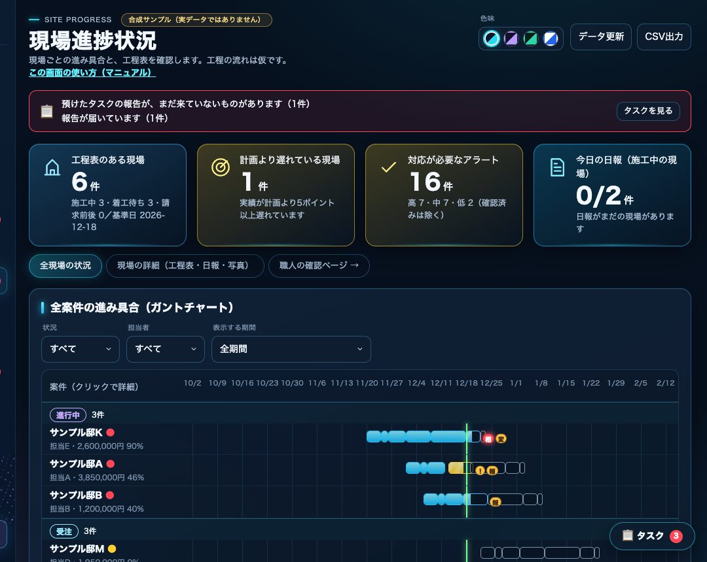
① 数字のカード4枚
工程表のある現場／計画より遅れている現場／対応が必要なアラート／今日の日報（施工中の現場）。
② 全案件の進み具合（ガントチャート）
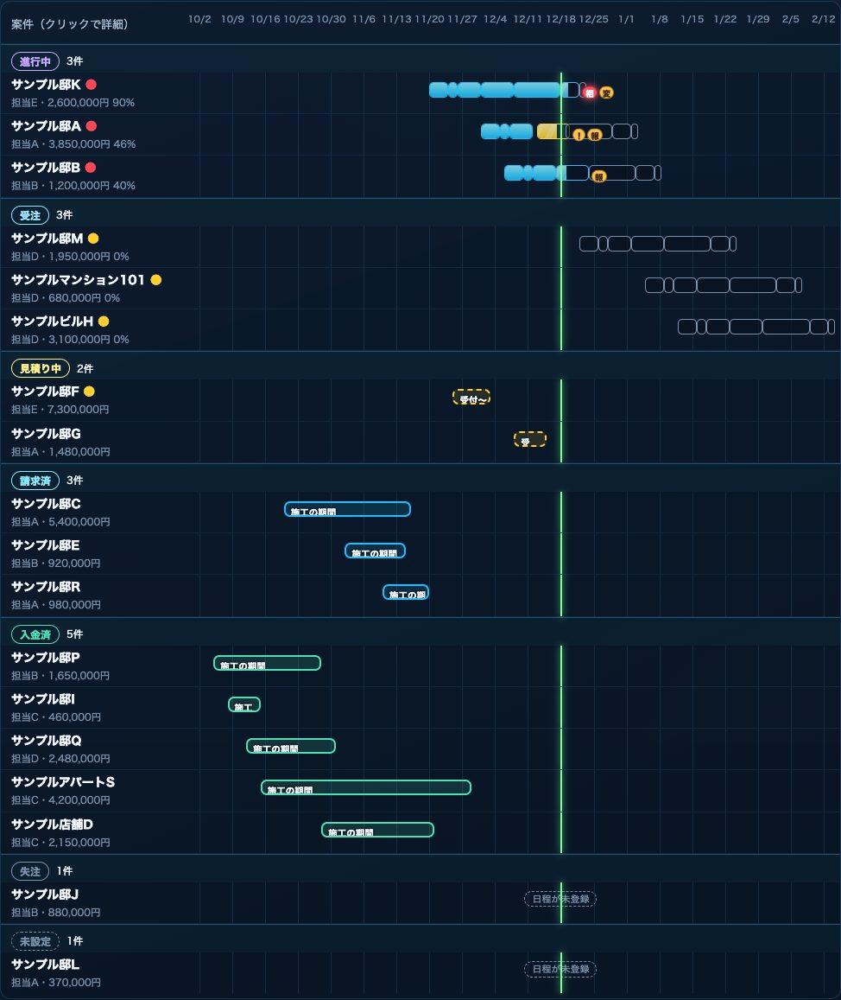
1本が1案件の工程です。横軸は日付（週ごとの目盛り）、緑の縦線が「今日」です。絞り込み：状況／担当者／表示する期間（全期間／今日の前後）。
- 左の案件名を押すと、その案件の簡易パネル（アラート・工程・最近の日報と写真・未処理のメモ）が出ます。「詳細ページ」で現場の詳細へ。案件名の横の赤い丸（●）は「高」のアラートがある印、黄色い丸は他のアラートがある印です。
- 工程表のある現場は、工程ごとに1本ずつの色付きの棒。枠の色が状態、棒の中の色が進み具合です（下の表）。
- 見積り中・請求済・入金済・失注などの案件は、状況の色の1本棒（見積り中は点線）で出ます。日程がない案件は「日程が未登録」と出ます。
| 色 | 意味 |
|---|---|
| 水色の枠 | 進行中 |
| 緑の枠 | 完了 |
| 黄色の枠 | 遅れ気味（予定の進み具合より15ポイント以上少ない） |
| 赤い枠 | 遅れ（予定の終了日を過ぎている） |
| 灰色の枠 | 未着手 |
棒の操作と動き
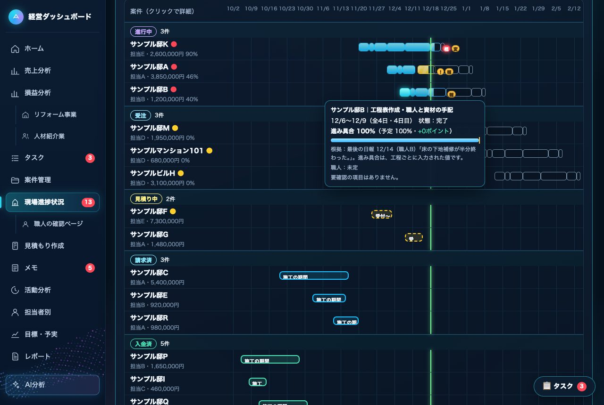
- 棒にマウスを乗せる／押す／Tabキーで移動：小さな吹き出しが出て、進み具合の根拠が見られます：日程（全○日・○日目）／進み具合○％（予定○％との差・ポイント）／最後の日報の日付・書いた人・内容／職人（確認済みか）／資材の件数（未発注の数）／要確認の項目。スマホでは、棒を押すと出て、もう一度押すと閉じます。Esc キーでも閉じます。
- 動き：画面を開くと棒が左から伸びます。進行中・遅れの棒には斜めの縞が流れ、遅れの棒は脈打つように光ります。端末の「動きを減らす」設定がオンのときは、動きません。
棒の右に付く「要確認」のマーク
| マーク | 意味 |
|---|---|
| ! | 遅れ（予定の終了日を過ぎている） |
| ! | 遅れ気味 |
| 相 | 職人から「代表に相談」が届いている |
| 職 | 職人の確認待ち |
| 発 発 | 資材の発注の期限が過ぎた（赤）／近づいている（黄） |
| 報 | 今日の日報がまだ上がっていない |
| 変 | 追加・変更工事の承認待ちがある |
赤は「急ぎ」、黄は「早めに確認」です。マークにマウスを乗せると、理由が出ます。マークは、いま動いている工程に付きます。
③ アラート（抜け漏れ・遅れ）
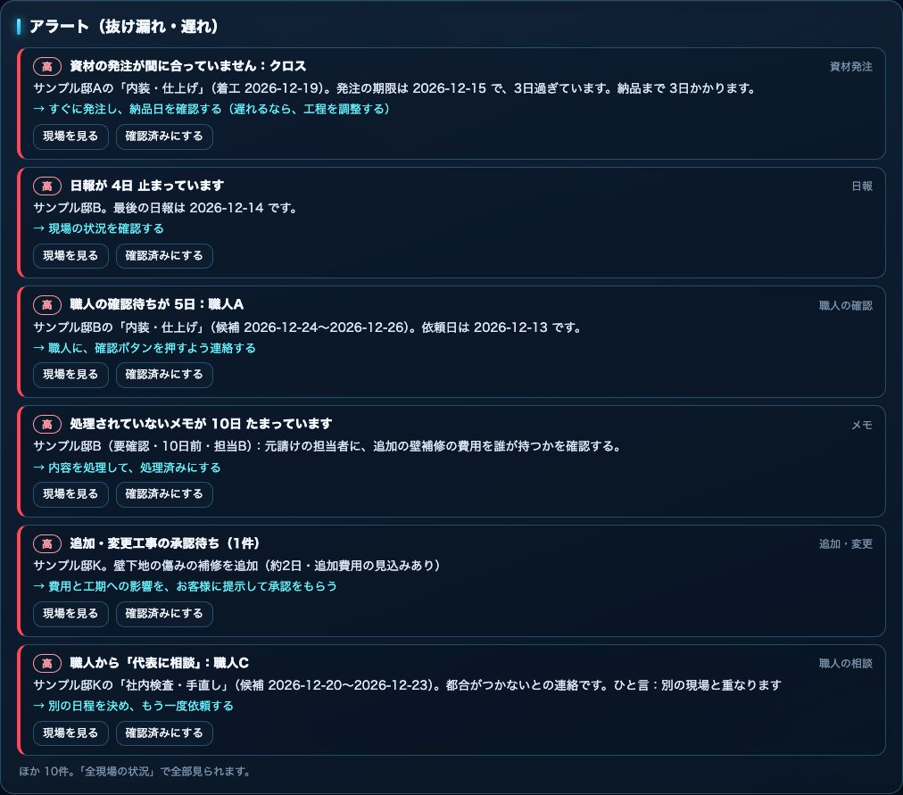
上位6件を表示。現場を見るでその現場へ、確認済みにするでその日の通知を隠せます。
| アラートの種類 | どんなときに出るか |
|---|---|
| 遅れ・施工の期間 | 工程が遅れている／施工が予定より長引いている |
| 日報 | 施工中の現場の日報が今日まだ上がっていない |
| 資材発注 | 発注の期限が近い（期限の5日前から）／過ぎている |
| 職人の確認／職人の相談 | 依頼に返事がない／職人が「代表に相談」を押した |
| 追加・変更 | 日報に追加・変更工事が出て、承認待ち |
| 着工前 | 着工前チェック（近隣挨拶・資材・職人・養生）に未完了がある |
| 契約／見積／受付〜見積／工程表 | 契約書が未締結／見積の返事待ちが長い／受付から見積までが空いている／工程表が無い |
| メモ | 処理されていないメモ |
急ぎ度：高 今日中の対応／中 早めに／低 近づいている・念のため。
④ 全現場の状況（表）・着工前の案件（表）
現場・担当・いま何をしているか・どこまで・計画との比較・最新の日報・追加変更工事・アラート数。着工前の案件は、見積り・契約の段階のものの一覧です。
タブ「現場の詳細（工程表・日報・写真）」
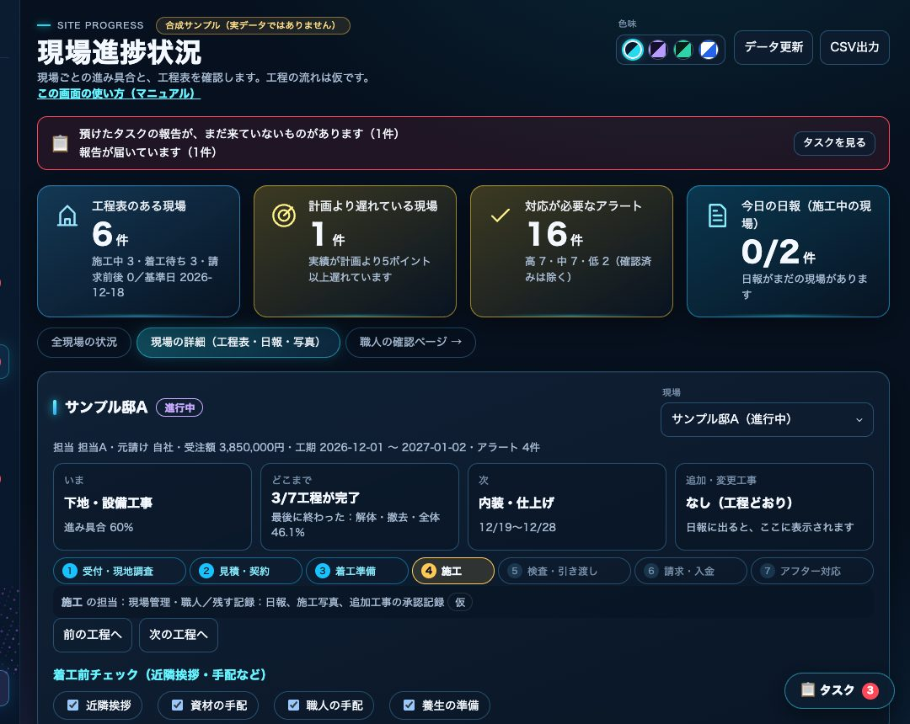
上の「現場」の選択で、1つの現場を選びます。上から順に：
- 現場の見出し：現場名・状況・担当・元請け・受注額・工期・アラート数。4つの箱：いま（いま何の工程か）／どこまで（完了した工程数と全体の％）／次（次の工程と日程）／追加・変更工事（件数と承認待ち）。
- 工程の流れ（7段階）：受付・現地調査→見積・契約→着工準備→施工→検査・引き渡し→請求・入金→アフター対応。いまの段階が光ります。前の工程へ／次の工程へで動かし、各段階の担当と残す記録も表示されます（段階の中身は仮です）。
- 着工前チェック：近隣挨拶／資材の手配／職人の手配／養生の準備。終わったらチェックを入れます（残っていると着工前アラートが出ます）。
- この現場のアラート：この現場だけの一覧。
- 工程表（進捗）：工程ごとの棒（全現場のガントと同じ操作・マーク）。左の工程名の下に、職人名と「確認済み／確認待ち／相談あり」、「資材○件（未発注 ○）」が出ます。棒の左の小さな丸は、資材の発注の期限の日（下の「発注するもの」を参照）。その下の表で、進み具合を％で入力するか、完了にするを押します。
- 発注するもの（資材・材料）：下の説明をご覧ください。
- 職人に日程を依頼する：工程・職人・候補の開始日と終了日・ひと言を入れて、この日程で職人に依頼する。職人は専用ページで確認し、押すと工程表に自動で反映されます。依頼の一覧には、状況（確認済み／相談あり／確認待ち）が出ます。「職人の専用ページ（見本のリンク）」を開くと、職人ごとの専用リンクの例が見られます（本番では、職人ごとに別々のリンクを送ります）。
- 日報・写真を上げる：現場・日付・書いた人・写真（複数可）・日報・「追加・変更工事が出た」のチェックと内容・承認の状況。日報を上げるで保存。
- この現場のメモ／日報・写真の記録：追加・変更工事は「未承認」のときに承認ボタンで承認済みにします。
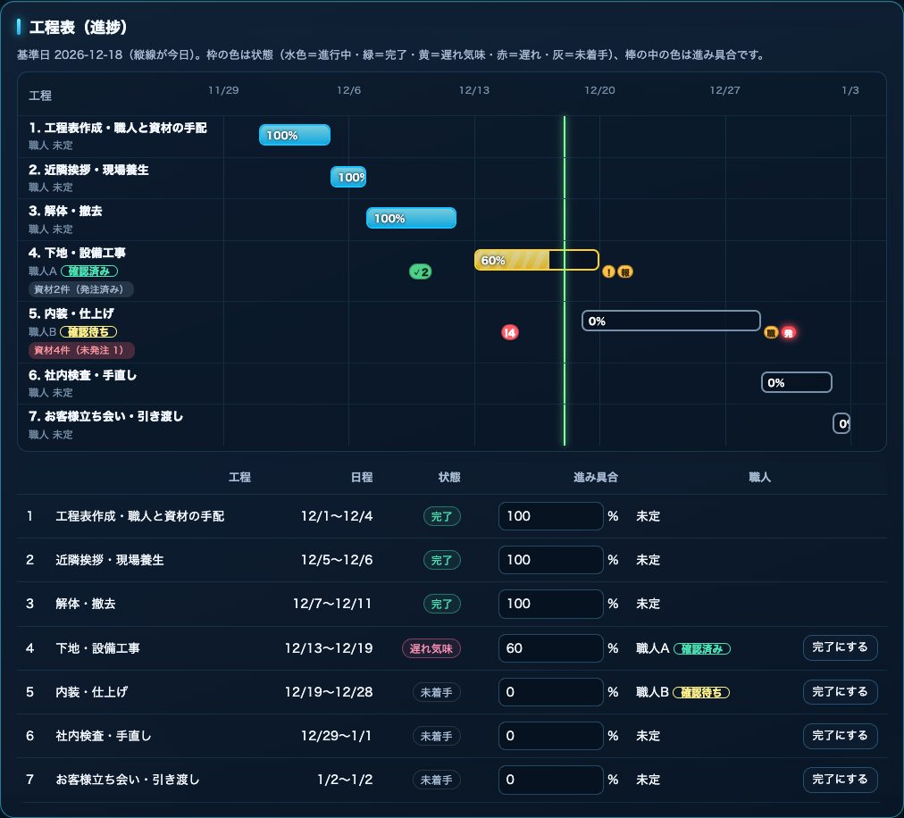
資材の発注（発注するもの）の考え方と操作
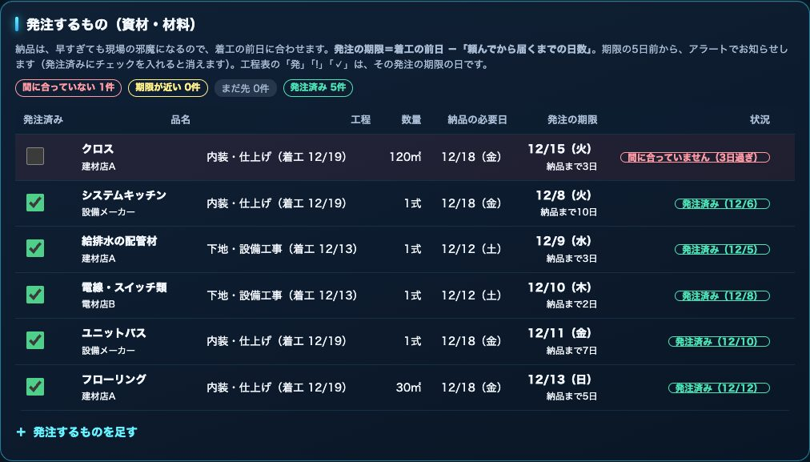
発注の期限 ＝ 着工の前日 −「頼んでから届くまでの日数」。工程の日程がずれると、期限も自動で動きます。
- 一覧の列：発注済み（チェック）／品名／工程（着工日）／数量／納品の必要日／発注の期限（届くまでの日数）／状況／（足したものだけ）消す。
- 状況：間に合っていません（○日過ぎ） ／ あと○日・今日が期限 ／まだ先 ／ 発注済み。上の小さな件数表示（間に合っていない・期限が近い・まだ先・発注済み）で全体が分かります。
- 発注したら、必ず「発注済み」にチェックを入れます。チェックするとアラートが消え、棒の横の丸が緑の ✓ になります。間違えたら、もう一度押すと元に戻ります。
- 工程表の丸は1工程に1つです。「発」＝まだ先、「!」＝期限が近い・過ぎた、「✓」＝すべて発注済み。数字（例「✓2」）は、その工程の資材の件数です。押す（乗せる）と、品名ごとの期限と状況が出ます。
- 追加：「発注するものを足す」を開き、使う工程・品名・数量・単位・頼んでから届くまでの日数を入れて発注するものに足す。
- アラートは、期限の5日前から出ます（遅すぎる発注も、早すぎる発注も防ぐため、早い時期は知らせません）。過ぎている＝高、あと1日以内＝中、2〜5日＝低。
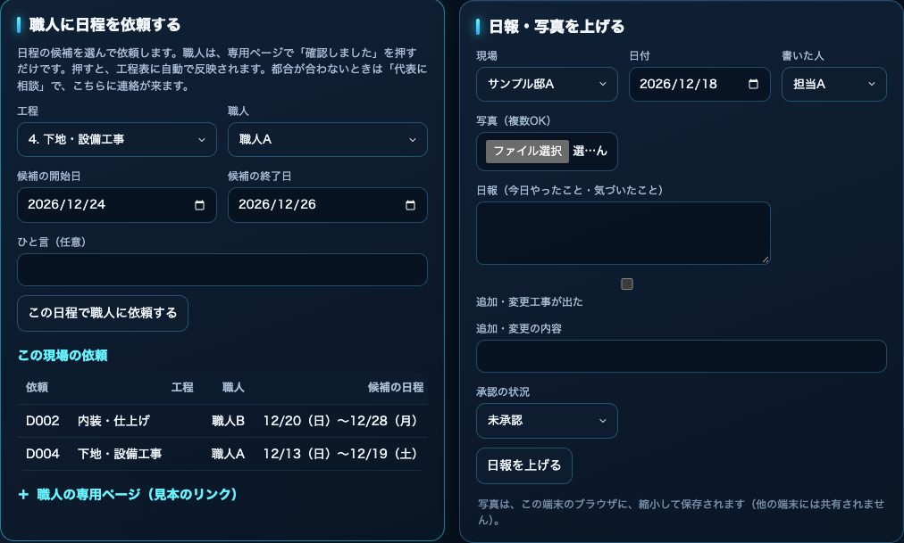
職人の確認ページ 画面を開く →
誰が使うか：職人さん本人が、自分の専用リンクから開くページを想定した見本です。本番では、職人ごとに別々のリンクを送り、そのページにはその職人さん宛の依頼だけが出ます（ログインや専用リンクで本人だけが見られる形にします）。左メニューには、見本として「現場進捗状況」の下に並べています。
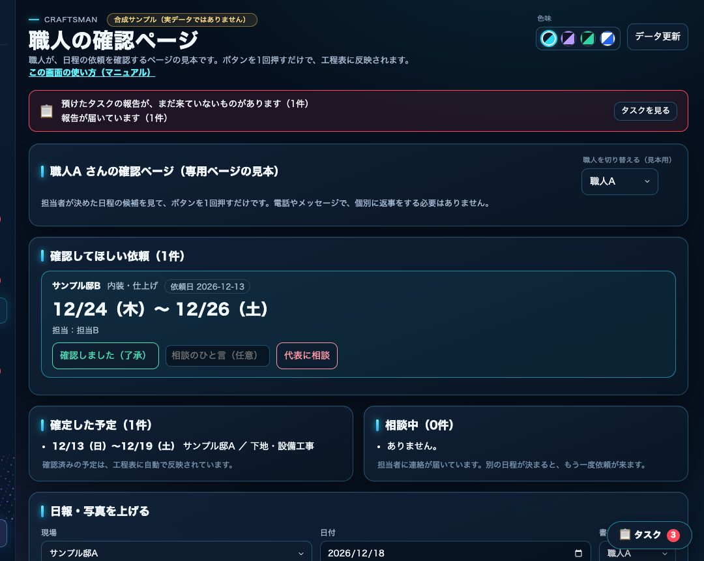
画面
- 見本用の切り替え：「職人を切り替える（見本用）」で、職人A・B・Cの画面を試せます。
- 確認してほしい依頼：現場名・工程・日程（○月○日（曜日）〜）・担当者・ひと言。ボタンは2つだけです。
- 確認しました（了承）：押すと、依頼した人の工程表に日程が自動で反映され、「確認済み」になります。
- 代表に相談：都合が合わないとき。相談のひと言（任意）を添えて押すと、依頼した人に連絡（アラート「職人の相談」）が届きます。
- 確定した予定：了承した予定の一覧（日付順）。相談中：相談を送ったものの一覧。
- 日報・写真を上げる：その日にやったこと・気づいたことと写真を、そのまま上げられます（追加・変更工事が出たときのチェックも）。
見積もり作成 画面を開く →
目的：見積書を画面で作り、印刷でき、案件にも登録できます。左に入力、右に見積書のプレビューが出ます（狭い画面では上下に並びます）。
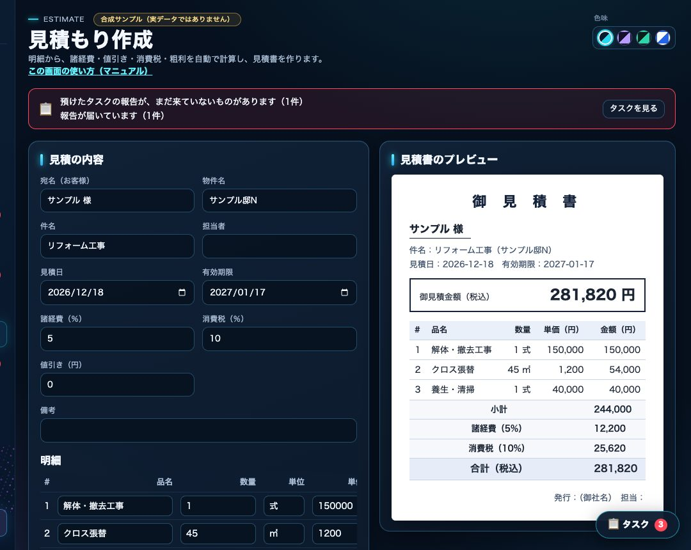
入力する場所
- 見積の内容：宛名（お客様）／物件名／件名／担当者／見積日／有効期限／諸経費（％）／消費税（％）／値引き（円）／備考。
- 明細：1行＝1つの項目。列は、品名・数量・単位・単価（円）・金額（円・自動計算）・原価の単価（社内用）（任意）。
- 行を足す：新しい行。「よく使う項目から足す」で、解体・撤去、下地補修、クロス張替、フローリング張替、ユニットバス交換、システムキッチン交換、トイレ交換、電気工事、給排水工事、廃材処分費、養生・清掃などをひな形から足せます。
- 消す：その行を消します。
見積書のプレビュー（右）
「御 見 積 書」の体裁で、小計・諸経費・値引き・消費税・合計が自動で計算されます。原価の単価（社内用）は、見積書には出ません（印刷してもお客様には見えません）。粗利は、原価を入れたときに社内用として計算されます。
ボタン
| ボタン | 効果 |
|---|---|
| この見積を案件に登録（見積り中） | 案件管理に「見積り中」の案件として登録されます（番号が表示されます） |
| 印刷 | 見積書だけを印刷する画面にします（PDFとして保存もできます） |
| CSV出力 | 明細をCSVで保存します |
| 最初の内容に戻す | 入力した内容を消して、最初のひな形に戻します |
メモ（現場の小さな記録） 画面を開く →
目的：現場や事務所での「ちょっとした気づき」を、その場で書き残し、処理されないままだとリマインドが出ます。忘れ・手配漏れを防ぎます。
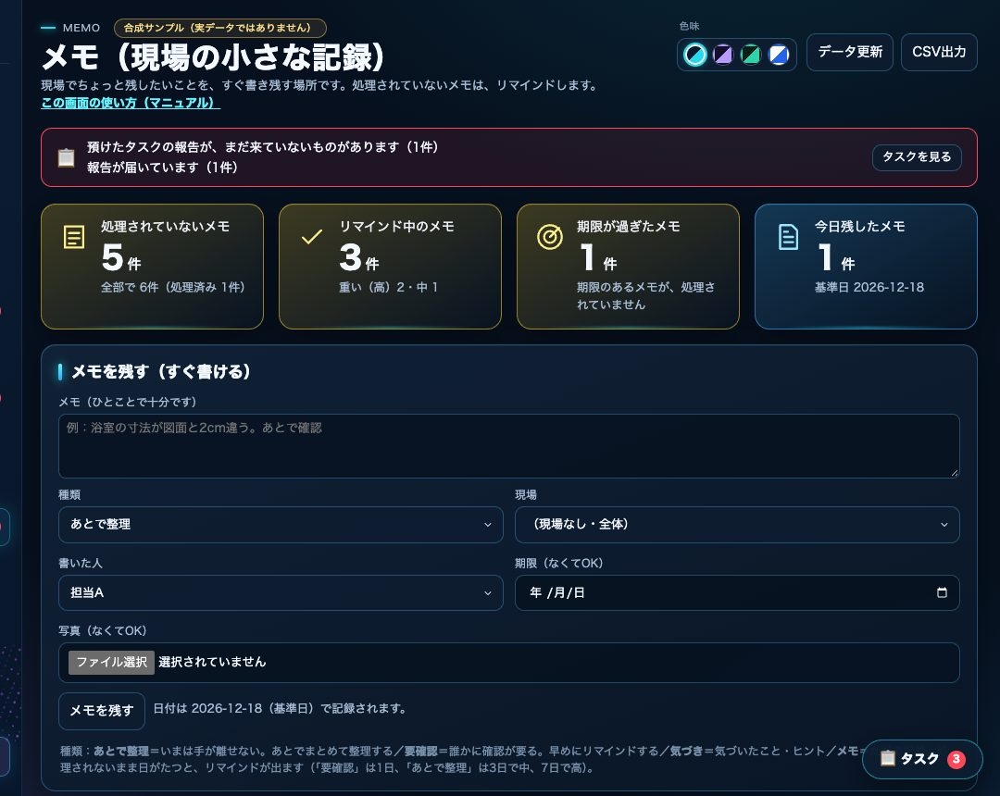
画面
- 数字のカード4枚：処理されていないメモ／リマインド中のメモ／期限が過ぎたメモ／今日残したメモ。
- メモを残す（すぐ書ける）：メモ（ひとことで十分）／種類（あとで整理・要確認・気づき・メモ）／現場／書いた人／期限（なくてOK）／写真（なくてOK）。メモを残すで保存。
- メモの一覧：タブ「未処理」「処理済み」「すべて」。現場や種類で絞れます。各メモに処理済みにする（戻すこともできます）。
- メモが未処理のまま日がたつと、ホームの「今日やること」と現場アラート（種類「メモ」）にリマインドが出ます。左メニューの「メモ」の赤い数字は未処理の数です。
- 各現場の詳細ページにも、その現場のメモが出ます（現場の詳細から直接メモも残せます）。
活動分析 画面を開く →
目的：事業ごとの「活動の流れ」（どの段階で何件か）と、担当者ごとの実績を見ます。「分析期間」（単月／直近3か月／年累計）で担当者の数字の期間を切り替えます。
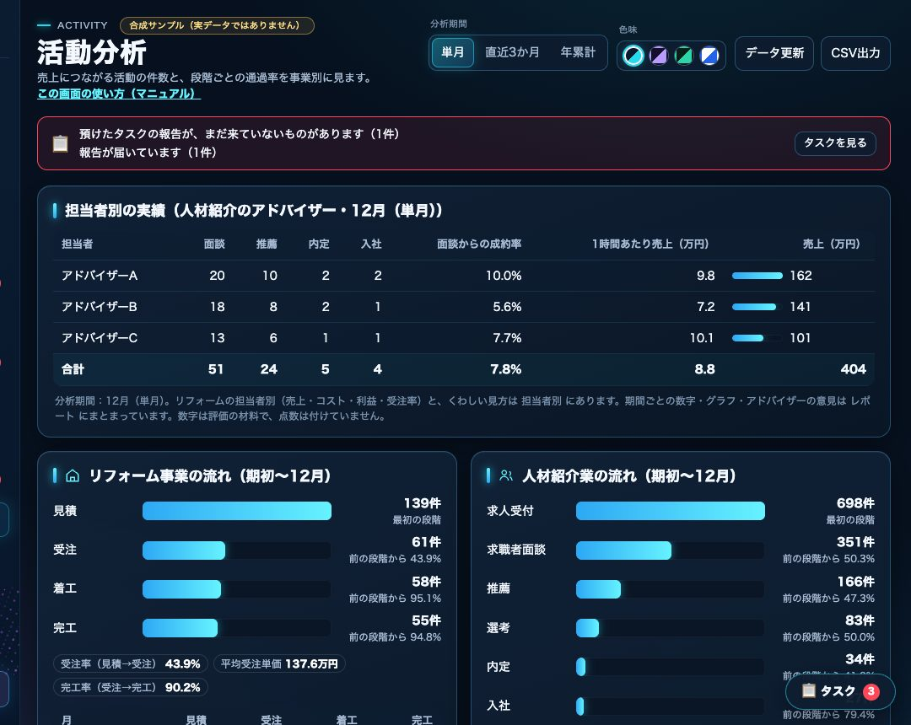
画面
- 担当者別の実績（人材紹介のアドバイザー）：担当者ごとの面談・推薦・内定・入社・面談からの成約率・1時間あたり売上・売上（棒つき）。いちばん下が合計。リフォームの担当者別と、くわしい見方は「担当者別」ページへのリンクがあります。
- リフォーム事業の流れ（期初〜今月）：見積→受注→着工→完工の件数。段ごとに「前の段階から何％か」。受注率（見積→受注）／平均受注単価／完工率。月ごとの件数の表付き。
- 人材紹介業の流れ：求人受付→求職者面談→推薦→選考→内定→入社。成約率（面談→入社）／内定→入社／1成約あたりの売上。
担当者別（経営の分析） 画面を開く →
目的：担当者ごとの数字を経営の目で見ます。上のタブで「リフォーム事業（営業・現場の担当）」と「人材紹介（アドバイザー）」を切り替えます。
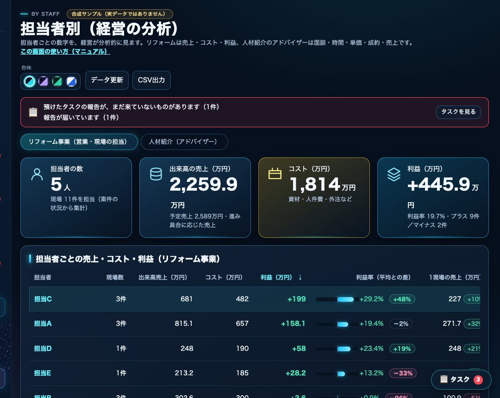
リフォーム事業
- カード：担当者の数／出来高の売上（万円）／コスト／利益。
- 担当者ごとの売上・コスト・利益の表：現場数・出来高売上・コスト・利益・利益率（平均との差）・1現場の売上・プラス／マイナスの現場数・受注率・見積り中の件数。列の見出しを押すと並べ替え（もう一度で逆順）。担当者名を押すと、下にその人の現場（収支）の一覧が出ます。
- 「平均との差」の小さな棒：中央が全体の平均で、右へ伸びるほど平均より上、左へ伸びるほど平均より下です。
人材紹介（アドバイザー）
アドバイザーごとの面談数・面談時間・平均単価・成約・売上、成約率・1時間あたり売上など。担当者を押すと、月ごとの推移などの詳細が出ます。全体の平均との差が、色付きのタグで示されます。
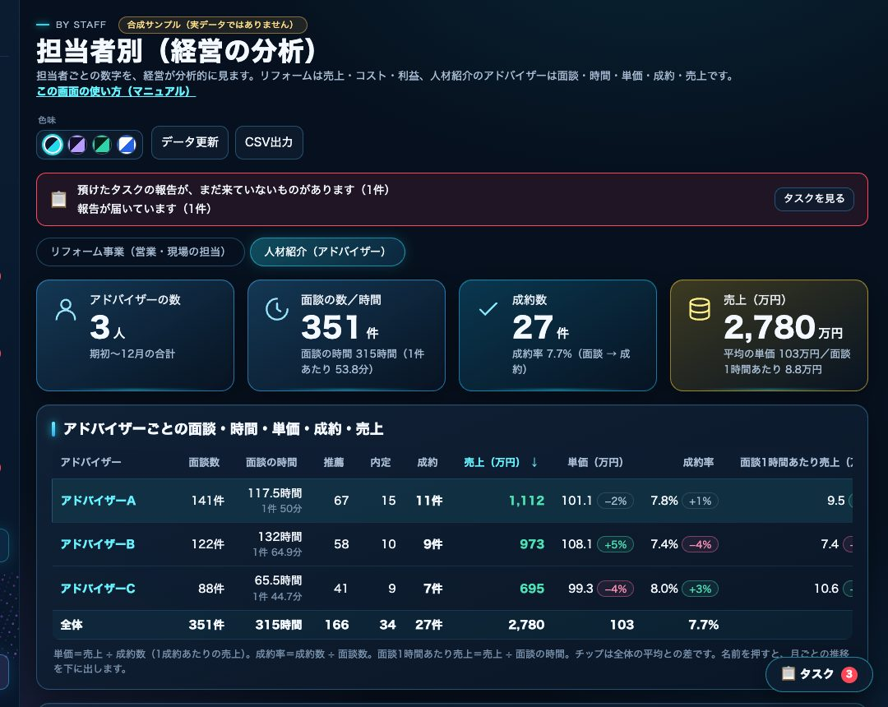
目標・予実 画面を開く →
目的：年間の目標額を決め、実績が計画に対してどうかを月ごとに確認します（予実＝予定と実績）。
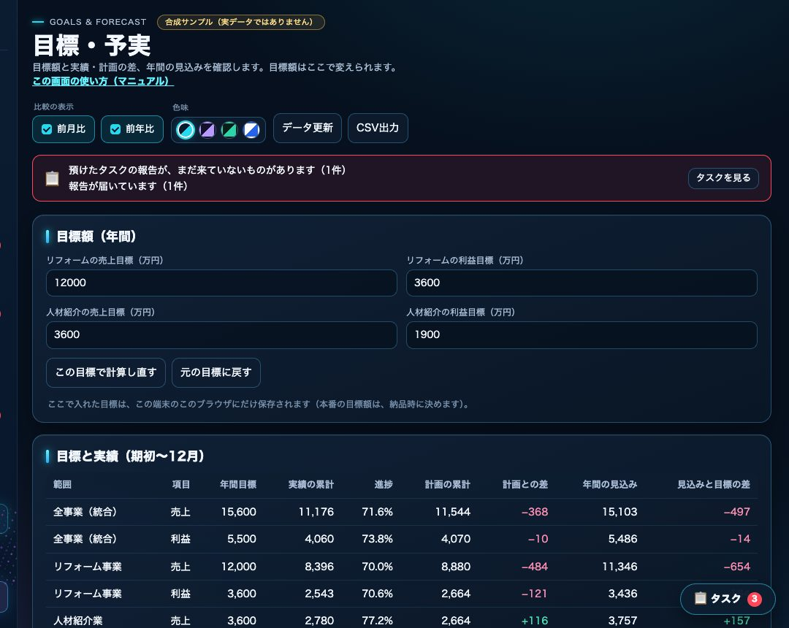
画面
- 目標額（年間）：リフォームの売上目標・利益目標、人材紹介の売上目標・利益目標（万円）を入力してこの目標で計算し直すを押すと、計画の線・進捗・見込みが計算し直されます。元の目標に戻すで最初の値へ。入力は、このブラウザに保存されます。
- 目標と実績（期初〜今月）：範囲・項目・年間目標・実績の累計・進捗・計画の累計・計画との差・年間の見込み（いまのペースで1年続いたら）・見込みと目標の差。
- グラフ（売上と累計の推移）と目標値に対する進捗。
- 月ごとの予実（売上・全事業）：月・計画・実績・差・累計の計画・累計の実績・累計の差。
年間の計画は、月ごとの季節の重み（忙しい月・暇な月）で割り振られています。
レポート 画面を開く →
目的：打ち合わせや月末の振り返りに使う「まとめ」です。上のタブ週間／月次／四半期／年間で、見る期間の単位を切り替えます。
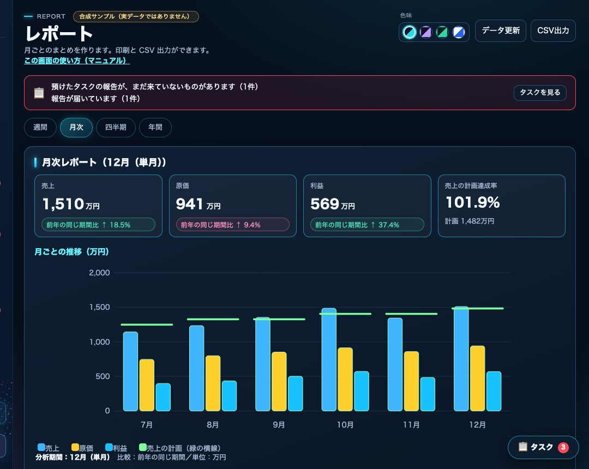
画面（どのタブでも共通）
- 数字の4つの箱：売上・原価・利益（前年の同じ期間比つき）・売上の計画達成率。
- 推移のグラフ：
- 週間：直近6週の売上・原価・利益（棒）と売上の計画（緑の横線）。
- 月次：直近6か月。
- 四半期：4月〜の3か月ごと（途中の期は「（途中）」と表示）。
- 年間：累計の推移（金＝売上の累計、緑点線＝計画の累計、紫＝前年、水色＝利益の累計）。
- 担当者別の実績（人材紹介のアドバイザー）：選んだ期間の面談・推薦・内定・入社・成約率・売上。
- アドバイザーの意見：次の5つの視点で、「何が起きているか（根拠の数字）」「できていないこと」「打つ手」「AIが代わりにできること」を出します。
タグ：要対応（注意が必要）／参考／良い点。視点 見ているもの 営業コンサル 売上の計画達成、商談の数と案件になった率、返事待ち、失注の理由 財務（お金） 原価率（計画・前年との比較）、資材費と人件費の伸び、利益率 現場運営 遅れた工程、日報の未提出、資材発注の遅れ、追加・変更の承認待ち 人材紹介 面談→推薦→内定→入社のどこが弱いか、担当者間の差 組織・育成 預けたまま報告のないタスク、未処理のメモ、見積り中の案件 - 「月次」タブだけ、さらに下に月次レポートの表（損益のまとめ・事業別・目標に対する進捗）と、月を選ぶ欄・印刷があります。
- アドバイザーの意見は、数字を決まった規則に当てはめて出した文章です。本物のコンサルタントやAIが考えたものではありません。目安として読み、判断は人が行ってください。
- 週間の金額は見本です。月の数字を日数で割って作っています。本番で週ごとに見るには、週ごとの数字を入れる仕組みが必要です。
AI分析 画面を開く →
目的：数字から見つけた「気づき」を一覧で読みます。「分析の範囲」（全事業／リフォーム／人材紹介）を選べます。
- 気づきには3種類あります：注意（計画より遅れている、原価率が高いなど）／参考／良い点。上に件数が出ます。
- 各項目は「見出し→説明→→ すること」の形です。
5. やりたいこと別の早見表
| やりたいこと | どこで | 操作 |
|---|---|---|
| 今日の優先順位を知りたい | ホーム | 「今日やること」を上から対応 |
| 今月の売上は計画どおりか | 損益分析 | 分析期間を「単月」にして「売上の計画達成率」を見る |
| 今年の累計で見たい | 損益分析 | 分析期間を「年累計」に |
| 原価が高い原因を知りたい | 損益分析 | 「原価の内訳」、グラフを「原価」に切り替えて棒に乗せる |
| 赤字の現場を探したい | 売上分析 | 「現場ごとの収支」の収益率を並べ替え |
| 遅れている現場を探したい | 現場進捗状況 | ガントの赤・黄の棒とマーク、アラート |
| 資材の発注を忘れない | 現場進捗状況（詳細） | 「発注するもの」で期限を見て、発注したらチェック |
| 職人さんに日程をお願いしたい | 現場進捗状況（詳細） | 「職人に日程を依頼する」 |
| 日報と写真を残したい | 職人の確認ページ／現場の詳細 | 「日報・写真を上げる」 |
| 見積書を作りたい | 見積もり作成 | 入力→案件に登録／印刷 |
| 商談を残したい | 案件管理（商談記録） | 「商談を記録する」 |
| 失注の理由を知りたい | 案件管理（商談記録） | 「失注・見送りの理由」 |
| 人に仕事を頼みたい | 右下の「タスク」→＋ | 「人に頼む」 |
| 自分のやることを管理したい | 右下の「タスク」→＋ | 「自分のタスクを追加する」→小項目で進み具合 |
| 小さな気づきを残したい | メモ | 「メモを残す」 |
| 目標を変えたい | 目標・予実 | 目標額を入力→「この目標で計算し直す」 |
| 週間・月次のまとめと打つ手 | レポート | タブを切り替える |
| 表をExcelで使いたい | 各ページ | 「CSV出力」 |
6. 色・記号・アイコン一覧
グラフ・数字の色
| 色 | 意味 |
|---|---|
| 水色 | 売上／利益（棒の中の利益・利益の累計の線） |
| 黄色 | 資材費 |
| 赤 | 人件費 |
| 金色の線 | 累計の実績 |
| 緑の太線・点線 | 目標の計画（太線＝月次／点線＝累計） |
| 薄い紫 | 前年 |
| 薄い黄緑の枠 | 積み上げ棒の全体の囲み |
| 薄い水色／薄い緑 | 事業の色（リフォーム事業／人材紹介業）。全ページで固定 |
急ぎ度・状態
| 表示 | 意味 |
|---|---|
| 高 | 今日中の対応が必要（期限切れ・間に合っていない・報告の遅れ など） |
| 中 | 早めに対応 |
| 低 | 近づいている／念のため |
| 緑の「確認済み」「発注済み」 | 済んでいる |
| 黄の「確認待ち」「あと○日」 | 相手の返事待ち／期限が近い |
| 赤の「相談あり」「間に合っていません」 | すぐ見る |
ガントチャートのマーク（再掲）
! 遅れ ! 遅れ気味 相 職人から相談 職 職人の確認待ち 発発 発注の期限 報 日報が未提出 変 追加・変更の承認待ち ／ 資材の発注の丸：発まだ先 !近い !過ぎた ✓発注済み
画面のアイコン
| アイコン・ボタン | 意味 |
|---|---|
| 📋 タスク（数字つき） | 右下のタスクの小画面を開く。数字は対応が必要なお知らせの数 |
| ＋（タスク画面の右上） | タスクを頼む／自分のタスクを追加する |
| 🎙 | 音声で商談を記録する |
| ●（案件名の横） | 赤＝「高」のアラートあり／黄＝その他のアラートあり |
| 赤い丸の数字（左メニュー） | 対応が必要な件数 |
| ↑↓（数字の横） | 増加・減少 |
7. 用語集
| 言葉 | やさしい説明 |
|---|---|
| 案件 | お客様から受けた1件の工事の話（見積りの段階から、入金まで） |
| 元請け | お客様と直接契約した会社。当社がその下請けとして工事するとき、元請けから発注を受けます。個人のお客様と直接契約するのは「個人発注（直接）」 |
| 受注額 | 契約が決まった工事の金額 |
| 粗利 | 受注額から、かかった費用を引いた儲け。粗利率＝粗利÷受注額 |
| 出来高 | 工事の進み具合に応じて、いまの時点で売上になった分（契約額×進み具合） |
| 原価 | 売上を作るためにかかった費用（資材費＋人件費など） |
| 売上原価率 | 売上のうち、原価が何％か。低いほど儲かる |
| 利益率 | 売上のうち、利益が何％か |
| 累計 | 期初（4月）から、いまの月までの合計 |
| 計画 | 年間の目標を月ごとに割り振った「この月はここまで」の数字 |
| 予実 | 予定（計画）と実績 |
| 前年比 | 前の年の同じ時期（同じ期間）と比べた増減（％） |
| 工程表 | 工事を作業の順に並べた日程表（ガントチャート） |
| ガントチャート | 日程を横長の棒で表した図。棒の長さが期間、中の色が進み具合 |
| 日報 | その日にやったことの記録（写真つき） |
| 追加・変更工事 | 契約になかった工事。承認（お客様の了承と費用の確認）が済むまで、費用と工程に入れません |
| 着工 | 工事を始めること |
| 失注 | お断りされて、仕事にならなかったこと |
| 商談 | お客様と工事の話をすること |
| 叩き台 | 最初の下書き。人が直してから使います |
| 委任・報告 | タスクを人に任せること／終わったことを伝えること |
| リマインド | 忘れていることを、画面で知らせる機能 |
| アラート | 抜け漏れ・遅れを、画面で知らせる警告 |
| Plaud（プラウド） | 会話を録音して文字にするサービス（この見本には、まだつないでいません） |
| CSV | Excelなどで開ける、表の保存形式 |
8. よくある質問・困ったとき
Q. 入力した内容が消えた／見本の最初の状態に戻したい
入力内容はブラウザの中にだけ保存されています。別のパソコンや、ブラウザのデータを消した後は、最初の状態になります。意図的に戻すには、ブラウザの設定で、このサイトのデータ（サイトデータ・ローカルストレージ）を削除してください。
Q. 新しい機能が出ない／表示が古い
ブラウザが古い部品を覚えている場合があります。ページを再読み込み（2回）してください。
Q. 画面が崩れる／はみ出す
スマホ・タブレット・パソコンの各幅で、はみ出さないよう調整してあります。工程のガントチャートと一覧の表は、横にスクロールして見る作りです（指でなぞる／横スクロール）。
Q. 「今日」がいつまでも12月18日のまま
見本は、基準日を2026年12月18日に固定してあります（数字が毎回同じになるように）。本番のシステムでは、実際の今日になります。
Q. 他の人にタスクを頼んだのに、相手の画面に出ない
見本では、1つの画面の中で「見る人」を切り替えて、相手の画面を再現しています。実際に別の人へ届けるには、共通の保存先（サーバー）をつなぐ必要があります（「9. 今できること／まだできないこと」）。
Q. 音声入力が使えない
お使いのブラウザが対応していない場合があります（Chrome など対応のブラウザで、マイクの許可が必要）。使う前に「音声入力を使うことに同意します」にチェックが要ります。使えないときは、文字起こしを貼り付けるか、手入力してください。
Q. 印刷したい
「見積もり作成」と「レポート（月次）」に印刷ボタンがあります。他のページは、ブラウザの印刷でも見やすくなるよう調整してあります。
Q. 色が見づらい
画面右上付近の「色味」の丸いボタンで、ネイビー・バイオレット・フォレスト・ライト（明るい）から選べます。
9. 今できること／まだできないこと
| 項目 | いまの状態 | 本番にするには |
|---|---|---|
| 数字・名前 | 合成の見本（本物の情報は入っていません） | 実データの取り込み（売上・原価・案件・人材紹介の活動）を接続 |
| 入力の保存 | このブラウザの中だけ | 共通の保存先（サーバー）と、ログイン |
| 複数人でのタスクのやり取り | 1つの画面で「見る人」を切り替えて再現 | 共通の保存先、本人だけが見られるログイン |
| 職人さんの専用リンク | 見本のリンク（切り替え式） | 職人ごとの専用リンクと、本人確認 |
| AIの提案（秘書・アドバイザー・AI分析・商談の整理） | 決まった規則で出す文章（AIは未接続） | AIをつなぐ場合は費用と、顧客情報を外部へ送る件の承認が必要。つないでも、送信などは承認を取る設計 |
| Plaud（録音）の自動取り込み | 見本の受信箱で流れを再現 | 録音サービスの契約、録音の同意、保存場所、外部送信の判断 |
| 音声入力 | ブラウザの機能で動く（同意が必要） | 必要に応じて、専用の音声認識サービス |
| 週ごとの金額 | 月の数字を日数で割った見本 | 週ごとの数字の入力 |
| 工程の流れ（7段階）の担当・記録 | 仮の内容 | 実際の流れに合わせて直す |
| 担当者別の数字の評価への利用 | 評価の「材料」まで（点数は付けない） | 評価への使い方は、会社として決める |